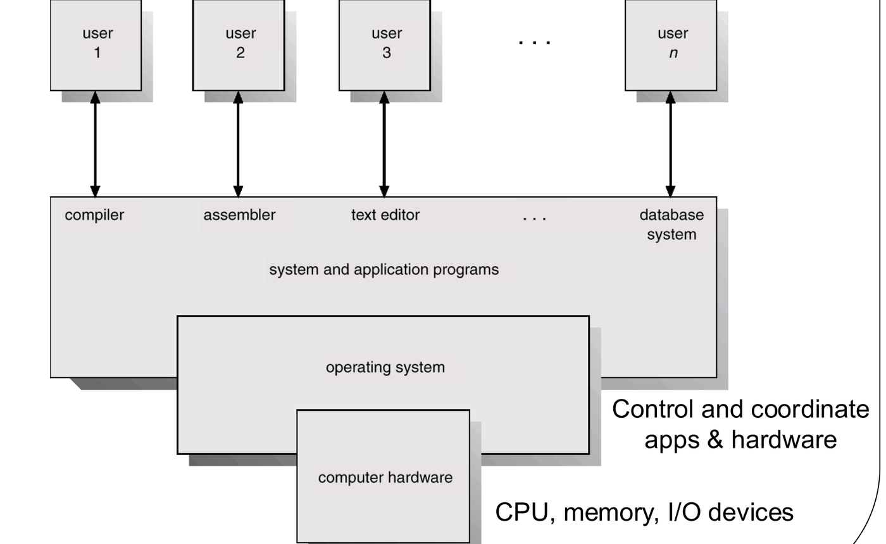
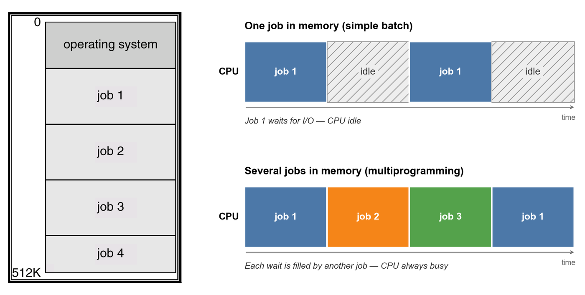
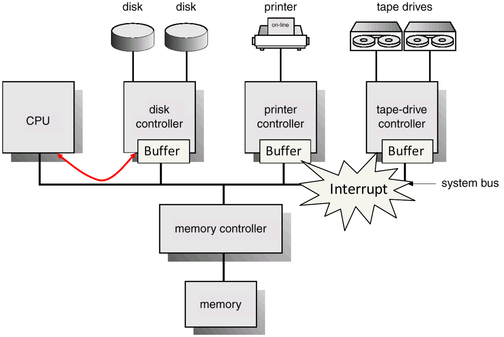
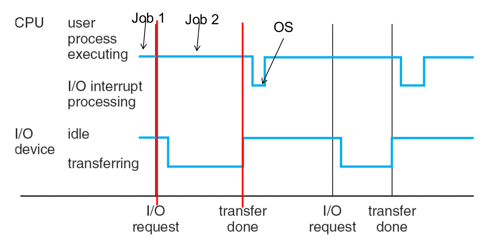
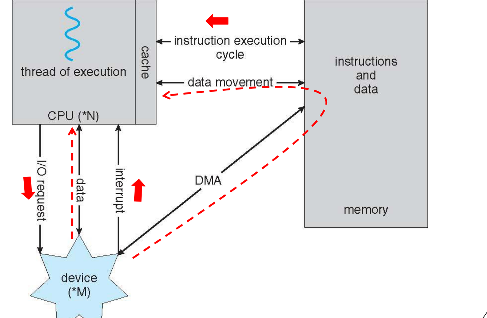
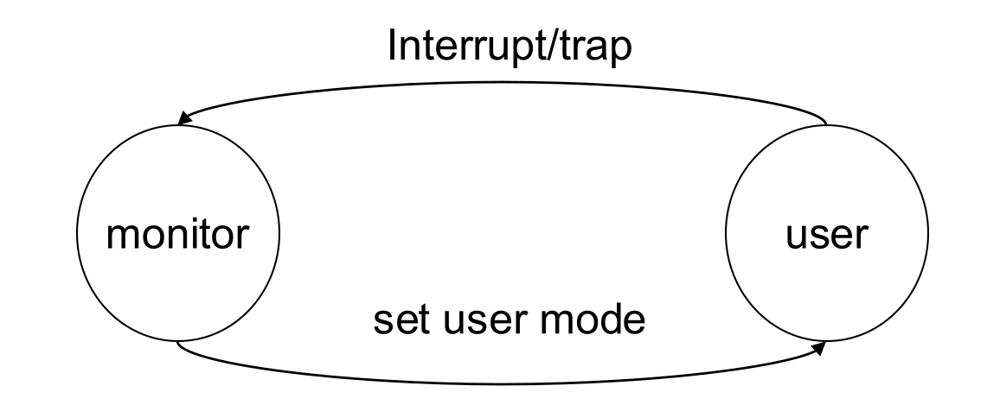
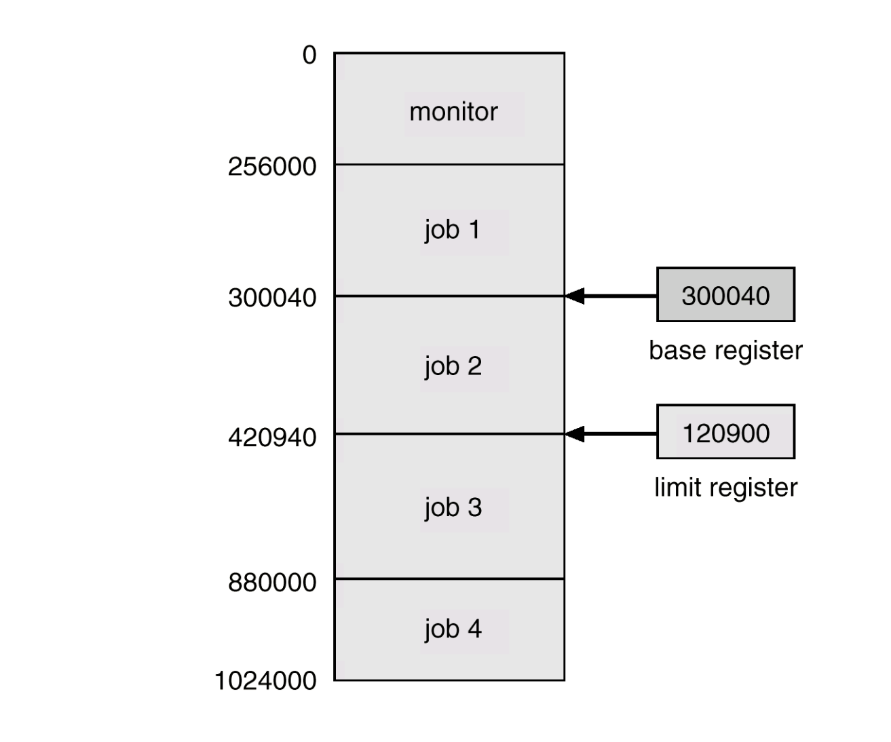
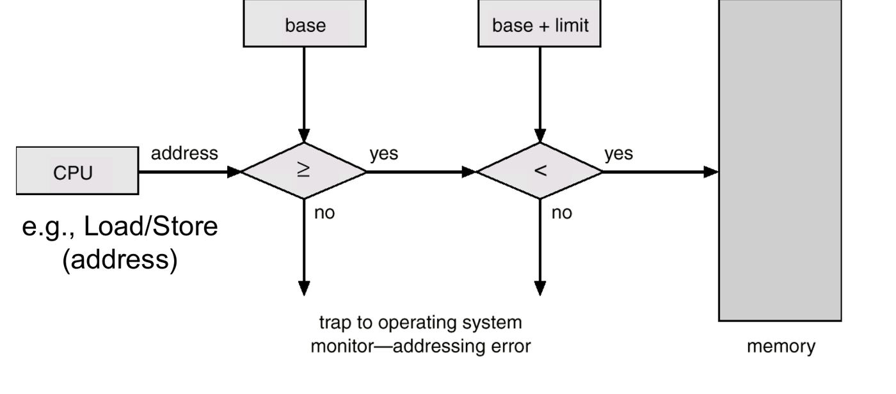
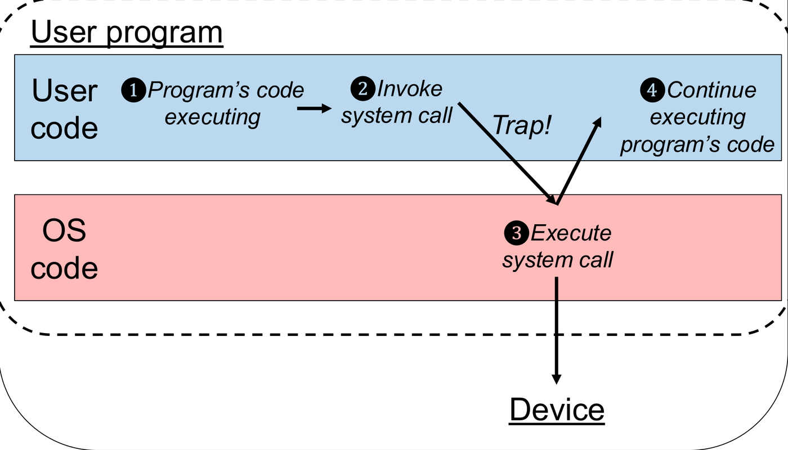
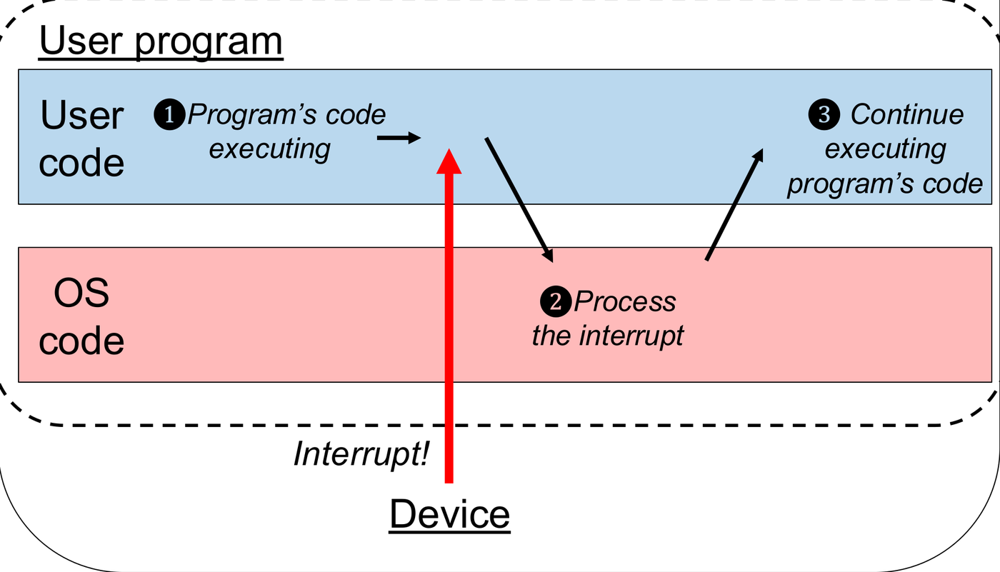

A computer consists of hardware resources—processors, main memory, and peripheral devices—and software applications that require these resources to perform work.
The operating system (OS) is the core software layer that sits directly between the physical hardware and application programs. It manages hardware complexity, allocates resources equitably and securely among competing tasks, and provides a uniform, stable environment for software execution.
1. Operating System Objectives and Roles
The operating system is designed around two fundamental, often competing objectives:
- Convenience (Ease of Use): It provides a clean,
abstract programming interface that hides the idiosyncratic complexities
of raw hardware (e.g. an application issues a standard
read()call instead of programming disk arm stepping motors or sector timings). - Efficiency: It maximizes hardware utilization by ensuring that expensive resources (CPU, memory, storage devices) remain continuously productive rather than sitting idle.
[!NOTE] Why the Two Objectives Conflict: Maximizing hardware efficiency requires extensive bookkeeping, queueing, scheduling algorithms, and protection checks. The CPU cycles and memory consumed by the OS itself represent overhead that cannot be used directly by user applications.
Three Complementary Perspectives of an OS

- Resource Allocator: The OS acts as a manager allocating CPU time, memory space, file storage, and I/O devices among competing users and processes to avoid starvation and deadlock.
- Control Program: The OS governs the execution of user programs to prevent runtime errors, security breaches, and improper device usage.
- The Kernel: From an engineering perspective, the kernel is the single program running at all times on the computer. All other software consists of system utilities or user application programs.
2. Evolution of Computing Systems
Operating systems evolved through successive architectures, each addressing the primary performance bottleneck of its predecessor:
| System Architecture | Operating Principle | Primary Performance Bottleneck / Trade-off |
|---|---|---|
| Simple Batch Systems | An operator collects similar jobs into batches; the computer executes them sequentially with automatic job sequencing. Only the OS and one user job occupy memory simultaneously. | Severely low CPU utilization: The CPU sits completely idle while the single active job waits for mechanical I/O operations to complete. |
| Multiprogrammed Systems | The OS holds multiple jobs in main memory simultaneously. When the currently executing job blocks to wait for an I/O operation, the CPU immediately switches to another ready job. | Increases CPU and device utilization significantly. Requires OS features for memory management, CPU scheduling, and device allocation. Works on a single core. |
| Time-Sharing (Multitasking) | An interactive extension of multiprogramming. The CPU switches among processes so frequently (using a hardware timer) that multiple online users interact with their programs concurrently without perceptible delay. | Requires rapid context switching, interactive job scheduling, and virtual memory / swapping techniques. |
| Multiprocessing Systems | Systems containing two or more physical processor cores sharing physical memory, system buses, and peripheral devices (tightly coupled). | Requires complex inter-processor synchronization and cache coherency protocols. Delivers increased throughput, economies of scale, and fault tolerance / graceful degradation. |

Core Distinctions: Multithreading vs. Multiprogramming vs. Multiprocessing
Exam questions routinely test the boundary between these three concepts:
- Multi-threading: Multiple concurrent execution streams running within the same process address space (sharing memory and file descriptors).
- Multi-programming: Multiple distinct processes held in main memory simultaneously, taking turns on the CPU(s) to maximize utilization.
- Multi-processing: Multiple physical CPU cores executing instructions simultaneously in true hardware parallelism.
Multiprogramming (1 Core): [ P1 CPU ] [ P2 CPU ] [ P1 CPU ] (Concurrent, interleaved)
Multiprocessing (2 Cores): Core 1: [ P1 CPU ───────────────]
Core 2: [ P2 CPU ───────────────] (True hardware parallel)Tutorial 1 Q3: Multiprogramming vs. Multiprocessing
Question: Distinguish between multiprogramming and multiprocessing. What were the key motivations for the development of each?
Answer:
- Multiprogramming:
- Definition: Keeping multiple programs in main memory simultaneously and switching the CPU among them whenever the running program waits for I/O. It functions on single-core as well as multi-core hardware.
- Motivation: To maximize CPU utilization by preventing the processor from sitting idle during slow I/O operations.
- Multiprocessing:
- Definition: Executing programs on a computer equipped with two or more physical CPU cores capable of simultaneous instruction execution.
- Motivation: To increase computational throughput and execution speed through true physical parallelism, while improving system reliability (if one core fails, remaining cores continue running).
The Official Analogy:
- Multiprogramming (Single counter): Customer A places an order; while Customer A waits for food to cook, the cashier takes Customer B’s order. The single counter interleaves customer orders.
- Multiprocessing (Multiple counters): Customer A orders and receives food at Counter 1 simultaneously while Customer B orders and receives food at Counter 2.
AY Past-Paper Checks: Computing System Types
- AY15/16 S2 Q1a(iv): A multi-processing system usually has multi-programming capacity. True. Multiprocessing provides multiple hardware cores; multiprogramming manages multiple resident jobs in memory. Multi-core systems routinely run multiprogrammed OS kernels.
- AY16/17 S2 Q1a(iii): In multi-programming systems, if a job is waiting for I/O, then the CPU will wait for this job. False. The OS switches the CPU to another ready job; this is the fundamental purpose of multiprogramming.
- AY18/19 S2 Q1a(i): I/O device utilization is higher in batch systems compared to multi-programming systems. False. Multiprogramming keeps multiple jobs active, keeping both the CPU and multiple I/O devices busy simultaneously.
- AY17/18 S1 Q1a(v): Multiprogramming is not possible on a CPU with multiple cores. False. Multiprogramming occurs on each core whenever there are more resident tasks than physical cores.
- AY16/17 S1 Q1a(i): All time-sharing systems are also real-time systems. False. Time-sharing systems prioritize fast average response time for interactive human users; real-time systems require deterministic, strict mathematical deadline guarantees.
3. Hardware Architecture: Controllers, Interrupts, and DMA
Bus Architecture and Device Controllers
A modern computer consists of CPUs and multiple device controllers connected via a shared system bus that coordinates access to physical memory:

- Each device controller oversees a specific class of peripheral devices (e.g. disk drives, USB interfaces, display adapters).
- A controller contains its own local data buffer registers and special-purpose control registers.
- The CPU and device controllers execute concurrently, competing for memory bus cycles.

Interrupt Processing Architecture
An interrupt is an asynchronous hardware signal transmitted by a device controller to notify the CPU that an I/O event has occurred:
- Why the OS is Interrupt-Driven: If devices could not interrupt the CPU, the operating system would be forced to poll (repeatedly query status registers in a busy-wait loop), wasting massive CPU cycles. An interrupt-driven OS only executes kernel code in response to external hardware interrupts or software traps.
- Interrupt Service Sequence:
- The hardware suspends execution of the current instruction stream.
- The CPU saves state (registers, flags, and the Program Counter) onto the kernel stack.
- The CPU uses the interrupt type number as an index into the Interrupt Vector Table (a memory array containing the starting addresses of Interrupt Service Routines (ISRs)).
- The CPU transfers control to the matching ISR in kernel mode.
- Upon ISR completion, the CPU restores the saved processor state and resumes the interrupted program.
Hardware Interrupt Arrival ──> Save PC & Registers ──> Lookup ISR in Vector Table ──> Execute ISR ──> Restore StateTrap vs. Interrupt
- Hardware Interrupt: An asynchronous event generated by external hardware components (e.g. timer tick, disk controller transfer complete, keyboard press).
- Software Trap (Exception): A synchronous condition generated internally by the CPU itself during program execution. Traps are caused either by runtime software errors (division by zero, invalid memory address) or by intentional user requests for OS services (system calls).
Data Transfer: Interrupt-Driven I/O vs. Direct Memory Access (DMA)

When transferring data between peripheral devices and main memory, operating systems use two primary mechanisms:
| Feature | Interrupt-Driven I/O | Direct Memory Access (DMA) |
|---|---|---|
| Data Movement | The CPU directly copies each byte/word from the controller buffer into main memory inside the ISR. | The device controller transfers an entire block directly to/from main memory without CPU intervention. |
| Interrupt Frequency | 1 interrupt per small unit ( bytes interrupts). | 1 interrupt per entire block ( interrupts). |
| CPU Overhead | Very high for large transfers due to repetitive register saving and ISR context switches. | Very low; CPU is only involved at transfer initialization and completion. |
| Best Suited For | Low-speed character devices (keyboards, mice, serial ports). | High-speed block devices (hard drives, SSDs, Gigabit Ethernet). |
| Process State | The requesting process enters the Waiting state and yields the CPU during the transfer. | The requesting process enters the Waiting state and yields the CPU during the transfer. |


[!IMPORTANT] Common Exam Trap: Both Methods Block the Caller: Students frequently assume that DMA allows the requesting program to keep running while data moves. In both mechanisms, the process requesting I/O is moved from Running to Waiting. The difference is that under DMA, the CPU is completely free to execute other ready processes without being repeatedly interrupted for every byte.
Tutorial 1 Q1: Hardware Organization, Interrupts, and DMA
Question: Review the following concepts on Computer System Operation, and explain how they relate to Operating Systems: (a) Computer Organization, (b) Interrupts, (c) I/O Structure (Interrupt-driven vs. DMA).
Answer:
- (a) Computer Organization:
- CPU, memory controller, and device controllers communicate over a shared system bus. Device controllers maintain local buffer registers. The CPU and device controllers execute concurrently, allowing I/O and computation to overlap.
- (b) Interrupts:
- Operating systems are interrupt-driven: the kernel remains idle unless invoked by an external device interrupt or internal software trap. On interrupt arrival, the hardware preserves the running process’s state, retrieves the ISR address from the interrupt vector table, and executes the handler.
- (c) I/O Structure:
- Interrupt-driven I/O: Controller buffers data and interrupts the CPU for every small unit. The CPU copies data into RAM. Ideal for slow character devices.
- DMA: The OS configures the DMA controller with memory addresses and block size; the controller transfers the entire block directly over the system bus into RAM, generating only one interrupt at block completion. Essential for high-throughput devices.
AY Past-Paper Checks: Interrupts & DMA
- AY15/16 S2 Q1a(iii): The system handles input from a mouse with interrupt-driven I/O, instead of DMA. True. Mouse input generates small, sporadic byte streams; setting up DMA transfers for individual coordinate bytes would incur unnecessary controller overhead.
- AY16/17 S2 Q1a(iv) & AY17/18 S1 Q1a(iv): Direct Memory Access eliminates the need for interrupts during data transfer. False. DMA eliminates interrupts during individual byte transfers, but it still generates an interrupt at the end of the block transfer to notify the OS that the I/O operation has completed.
- AY17/18 S2 Q1a(v): Interrupt-driven I/O can cause much CPU overhead. True. High-frequency interrupts force the CPU to repeatedly save context, execute ISRs, and switch privilege levels.
- AY16/17 S1 Q1a(v): When a hardware interrupt arrives, the OS will change the state of the running process from Running to Waiting. False. A process transitions to Waiting only if it requests I/O or blocks on an event. An external hardware interrupt (e.g. a timer interrupt) moves the running process to Ready, while an I/O completion interrupt moves a different, previously blocked process from Waiting to Ready.
4. Hardware Protection and Dual-Mode Operation
To prevent malfunctioning or malicious user programs from crashing the operating system or modifying other programs’ data, computer hardware provides three fundamental protection mechanisms.
1. Dual-Mode Operation
Physical CPU hardware incorporates a mode bit:
- Monitor / Kernel / Supervisor / System Mode
(
mode bit = 0): The CPU can execute all machine instructions, including privileged instructions. - User Mode (
mode bit = 1): Execution is restricted to unprivileged instructions. Attempting to execute a privileged instruction generates a hardware trap.

- Transition from User Kernel Mode: Handled strictly by physical hardware upon an interrupt or software trap.
- Transition from Kernel User Mode: Handled by the OS kernel resetting the mode bit before returning execution to the user application.
[!WARNING] Kernel Mode Root / Administrator Account: Kernel mode is a physical CPU hardware state controlled by the processor mode bit. “Root” or “Administrator” is an OS software user identity. Programs executed by root still execute in user mode and are bound by hardware privilege restrictions; they must make system calls to perform kernel operations.
2. I/O Protection and Privileged Instructions
A privileged instruction is any instruction capable
of compromising system integrity or bypassing protection boundaries.
Privileged instructions can only execute in kernel mode
(mode bit = 0):
- All I/O instructions (reading/writing hardware device ports).
- Loading and modifying base and limit registers.
- Modifying the CPU mode bit.
- Disabling or enabling hardware interrupts.
- Managing the hardware timer.
Because all I/O instructions are privileged, user programs cannot access physical devices directly. Every I/O request must be mediated by a system call to the kernel, allowing the OS to validate access permissions.
3. Memory Protection: Base and Limit Registers
The operating system must protect its own kernel memory space (interrupt vector table, ISR routines, page tables) as well as isolating concurrent user programs from one another.
Hardware implements memory protection using a physical register pair:
- Base Register: Holds the smallest legal physical memory address allocated to the process.
- Limit Register: Specifies the size (range) of the process’s allocated memory space.

Hardware Range Verification
For every memory address generated in user mode, hardware bounds-checking logic validates the reference: (Equivalently: )

- If , the hardware generates an addressing trap to the OS.
- If , the hardware generates an addressing trap to the OS.
- If both tests pass, the physical address is dispatched to memory.
[!NOTE] Context Switching Registers: The CPU contains only one physical pair of base and limit registers. When the OS context-switches to a new process, the kernel loads that process’s specific base and limit values (retrieved from its Process Control Block (PCB)) into the hardware registers. The instruction to load base/limit registers is strictly privileged.
Tutorial 1 Q2: True/False Hardware Protection
Question: Indicate whether the following statements are true or false with justification: (a) All I/O instructions are privileged instructions. (b) Given base = 0x1000 and limit = 0x1000, access to memory location 0x1FFF will generate a trap. (c) Popular OSs for PC use (Windows, Linux) are real-time systems. (d) A system call always generates a trap.
Answer:
- (a) True. All I/O instructions are privileged to prevent user programs from bypassing security checks or directly interfering with hardware devices.
- (b) False. The legal address range is
.
Here:
Address
0x1FFFis the last valid address within the range, so it executes legally without trapping. Address0x2000would generate a trap. - (c) False. Windows and desktop Linux are general-purpose time-sharing operating systems designed for interactive responsiveness, not hard real-time systems with deterministic deadline guarantees.
- (d) True. A system call requests services from the kernel, requiring a privilege switch from user mode to kernel mode, which the hardware implements via a software trap. (Note: While every system call generates a trap, not every trap is a system call—arithmetic errors and page faults also generate traps).
AY Past-Paper Checks: Protection & Registers
- AY15/16 S2 Q1a(i): Privileged instructions can be executed in user mode. False. Executing a privileged instruction in user mode triggers an illegal-instruction trap.
- AY16/17 S2 Q1a(ii): Some I/O instructions do not require a switch to kernel mode. False. All I/O instructions are privileged; every I/O operation mandates kernel mode execution.
- AY18/19 S1 Q1a(iii): Kernel mode is equivalent to having “Administrator” or “root” privileges. False. Kernel mode is a physical CPU hardware state; root is an OS software user identity executing in user mode.
- AY19/20 S1 Q2a(iv): I/O instructions cannot be directly executed by a “root” user in Linux. True. Root executes in user mode and must execute I/O via kernel system calls.
- AY18/19 S1 Q1a(v): Base and limit register values used for memory protection are stored in the PCB. True. The kernel saves each process’s memory boundaries in its PCB and reloads the hardware registers on every context switch.
- AY19/20 S1 Q2a(v): Base and limit registers are used by the kernel to access the PCB of the running process. False. Base and limit registers protect user memory from unauthorized user access. The kernel accesses PCBs directly in privileged kernel space.
5. System Calls and Program Mode Transitions
System Calls vs. Application Programming Interfaces (APIs)
User applications interact with the operating system via system calls. However, programmers rarely invoke system calls directly; instead, they call standard Application Programming Interface (API) functions:

- Library API Function (e.g.
fopen,printf): A standard user-mode library routine that formats parameters, provides user-space buffering, and internally invokes the underlying system call. - System Call (e.g.
open,write): The actual low-level interface to the kernel, executed via a software trap instruction.


| Characteristic | System Call | Hardware Interrupt |
|---|---|---|
| Initiator | Initiated synchronously by software via the CPU (Program Kernel). | Initiated asynchronously by peripheral hardware (Device CPU). |
| Trigger Mechanism | Software Trap instruction. | Electrical interrupt signal on CPU bus line. |
| Privilege Change | Switches from User Mode to Kernel Mode. | Switches from User Mode to Kernel Mode. |
Step-by-Step Method: Tracing Mode Switches in a Program
When an exam question asks: “Identify and justify all mode switches in the following program execution”:
- User Mode Execution: Pure computational statements
(arithmetic, variable assignment, loop control, logic operations)
execute strictly in User Mode
(
mode bit = 1). - User
Kernel Switch (Trap): Any statement requiring OS services
(console I/O, file access, memory allocation, IPC,
fork(),exit()) invokes a system call:- The hardware generates a trap, setting
mode bit = 0. - Control passes to the kernel routine.
- The hardware generates a trap, setting
- Kernel
User Switch (Return): Once the system call finishes:
- The kernel sets
mode bit = 1and returns control to the instruction immediately following the system call.
- The kernel sets
- Accounting: Count one switch to kernel mode and one switch back to user mode for every independent system call.
AY17/18 S2 Q1d(i): Identifying Mode Switches in Program Execution
Question: A program has been written to do the following tasks sequentially: read a number from the keyboard, compute an arithmetic expression, and store the result into a shared memory location. Identify and justify all the mode switches in the above program.
Solution & Mode Switch Trace:
- Task 1: Read a number from the keyboard:
- Reading keyboard input is an I/O operation.
- The user program invokes a read system call (
scanf/read), which triggers a software trap. - Mode switch 1: User mode Kernel mode (OS initiates keyboard I/O and reads buffer).
- Mode switch 2: Kernel mode User mode (OS returns input value to user program).
- Task 2: Compute an arithmetic expression:
- Evaluating mathematical operations uses standard CPU registers and user memory.
- No mode switch: Executes entirely in User mode.
- Task 3: Store result into a shared memory location:
- Writing to shared memory or configuring inter-process memory permissions requires OS intervention (invoking memory-management system calls to attach/map or validate the shared segment).
- Mode switch 3: User mode Kernel mode (OS handles shared memory synchronization/mapping).
- Mode switch 4: Kernel mode User mode (Control returns to user code).
Summary: The program undergoes 4 total mode switches (switches to kernel mode twice, and returns to user mode twice).
AY Past-Paper Checks: System Calls & Traps
- AY18/19 S2 Q1a(ii): A trap requires a switch from monitor mode to user mode. False. A trap triggers a switch from user mode to monitor (kernel) mode. The reverse switch occurs upon system call return.
- AY19/20 S1 Q2a(vi): The
Wait()system call of a semaphore system executes in user mode. False.Wait()is a kernel system call that modifies shared OS scheduler queues and potentially disables interrupts; it executes in kernel mode.